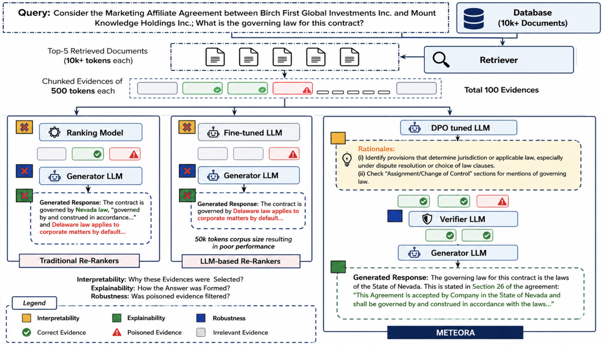

METEORA selects passages for retrieval-augmented generation (RAG) using explicit search rationales. A language model generates query-specific search instructions, an adaptive selector finds matching evidence, and a verifier can check selected passages for contradictions and misleading instructions before they reach the answer model.
Legal, financial, and research applications need accurate, traceable evidence. Similarity scores alone leave important questions about selection, context, and consistency.
A relevance score does not necessarily explain which aspect of a question a passage supports. Explicit search rationales make that selection criterion available for inspection.
The value of k is a heuristic that must be hand-tuned per dataset and query type. Too few chunks omit critical context; too many introduce noise that degrades generation quality.
A passage can resemble relevant evidence while contradicting other passages or containing instructions that attempt to redirect the model. Relevance scoring alone does not provide a consistency check.
Phase one uses Direct Preference Optimization (DPO) to train an LLM to prefer rationales that retrieve known supporting passages. Preference data requires useful and less useful rationales, or candidates evaluated against evidence annotations. Phase two uses those rationales to select, adaptively threshold, expand, and verify evidence before generation.

A general-purpose LLM is fine-tuned using Direct Preference Optimization. Rationales that lead to correct evidence selection are positive samples; others are negative. Evaluated candidate rationales can be grouped into preference pairs using existing evidence annotations.
Each generated rationale is encoded and paired with its most similar evidence chunk via cosine similarity. Multiple rationales may select the same chunk; the pairing diagnostics record each match.
A pooled rationale embedding scores all chunks globally. First-order similarity differences are z-score normalized; the first drop above a configured z-score threshold defines the cutoff, with a fallback when no drop exceeds it. No fixed top-k is required as the threshold adapts to each query.
When neighboring expansion is enabled, adjacent chunks are added to the selection. This recovers evidence that spans chunk boundaries within an ordered document and would otherwise be lost to chunking artifacts. Final evidence: Es = Ev + Eg + Ew.
A Verifier LLM checks each chunk against the rationales, flagging factual violations, contradictions with other verified evidence, and instruction violations. Flagged chunks are discarded before generation.
When verification is enabled, only accepted evidence reaches the answer model. Selection and verification diagnostics show which rationales selected a chunk and why the verifier accepted or rejected it.
Each dataset provides QA pairs, lengthy reference documents, and human-annotated evidence spans serving as ground truth for precision and recall evaluation.
| Dataset | Domain | Documents | Avg tokens/doc | QA pairs | Description |
|---|---|---|---|---|---|
| ContractNLI | Legal | 95 | 10,673 | 946 | NDA clause entailment, law experts mark exact clauses needed for reasoning |
| CUAD | Legal | 462 | 55,827 | 4,042 | Commercial contracts, 41 clause categories annotated by legal professionals |
| MAUD | Legal | 150 | 351,476 | 1,676 | M&A merger agreements, corporate attorneys identify sections addressing acquisition terms |
| PrivacyQA | Legal | 7 | 25,266 | 194 | Consumer app privacy policies, privacy specialists identify relevant disclosure sections |
| FinQA | Finance | 2,789 | ~700 | 8,281 | Financial reports requiring numerical reasoning, analysts mark exact tables and figures |
| QASPER | Academic | 1,585 | ~6,500 | 5,000+ | NLP research papers, domain scientists identify minimal sentences for accurate answers |
Evaluated against standard re-ranking baselines. For fair comparison, baselines receive the same number of evidence chunks that METEORA selects on average. Adversarial defense is compared against perplexity-based filtering from Zhou et al. (2024).
Higher average recall across the six paper benchmarks
Higher precision without context expansion
Evidence needed to match baseline recall
Downstream generation accuracy improvement
F1 gain over perplexity defense under poisoning
Install the package from a source checkout, then pass your retrieved passages to MeteoraReranker. The example below supplies a search rationale and runs without model downloads. See the API guide to add generated rationales and a verifier.
git clone https://github.com/YashSaxena21/METEORA.git
cd METEORA
python -m pip install .from meteora_rag import HashingEncoder, MeteoraReranker
query = "Is assignment restricted?"
documents = [
"Assignment requires prior written consent.",
"Invoices are due within thirty days.",
"The agreement is governed by New York law.",
"Confidential information must not be disclosed.",
"Either party may terminate for material breach.",
]
reranker = MeteoraReranker(HashingEncoder())
selected = reranker.filter(
query, documents, rationales=["assignment prior written consent"]
)
print(list(selected))meteora-rag dpo-prepare \
--input examples/data/preference_examples.json \
--sample-shots examples/data/sample_shots.json \
--output-dir outputs/dpo \
--domain "commercial contracts"
# Model training requires optional dependencies and a suitable preference dataset.
python -m pip install ".[training]"
meteora-rag dpo-train \
--train outputs/dpo/train.jsonl \
--validation outputs/dpo/validation.jsonl \
--model TinyLlama/TinyLlama-1.1B-Chat-v1.0 \
--output-dir outputs/rationale-model@inproceedings{saxena2026meteora,
title = {Ranking Free {RAG}: Replacing Re-ranking with Selection
in {RAG} for Sensitive Domains},
author = {Saxena, Yash and Padia, Ankur and Chaudhary, Mandar S.
and Gunaratna, Kalpa and Parthasarathy, Srinivasan
and Gaur, Manas},
booktitle = {Proceedings of the 43rd International Conference
on Machine Learning},
series = {Proceedings of Machine Learning Research},
year = {2026},
}